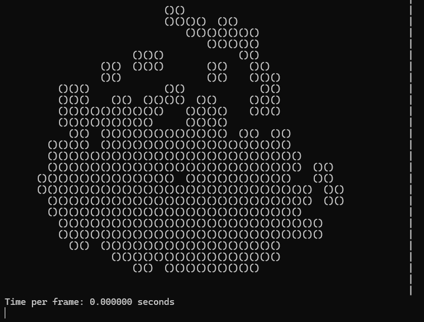

Fluid Sim Pendant
January 2025
05/16/2025
This is the first project that I am not backdating. This page will be regularly updated as more progress is made.
In January of this year, a few friends and I ventured to replicate a fluid simulation pendant that was going viral on YouTube. The
original design by Mixtela featured an 216-LED matrix and support for rotation in calculating how the fluid should operate.
We aim to improve on his design in a number of different ways:
1) Reduce the size of the pendant...a lot. By using smaller LEDs and genuinely insane charlieplexed routing, we can essentially half the size of the final piece.
2) Full motion support. Not just rotation, but also inertial movement.
3) Fully waterproof hardwood case. It just looks cooler.
Not much physical work has been done on the project as of now. We are still trying to validate our designs and then hopefully move into prototyping and code validation by the end of summer.
For now, we have our PCB in the routing phase, and the fluid simulation code is waiting for a prototype. While Mixtela uses STEP to simulate fluids, we use a custom approach that takes advantage of the low resolution of our output image to make some technical simplifications.
It's essentially a "marbles in a jar" type simulation. Think a couple hundred grains of sand with high elasticity with a variable coefficient of friction (high on surface, low on fluid). This allows us to achieve the same effect on such a small resolution (the only place this method would work).
Right now, the code is tested virtually using the console. The video below gives a good idea of what the screen may look like, with each () representing a lit LED.
As you can see, there are a few areas for improvement in the simulation right now. Mainly, the grains of sand approach allows for a lot of what I call "visual decompression", where one grain of sand overlaps 4 LED coordinates and turns all of them on. This is obviously shown when the simulation is "tilted" (gravity is randomized),
and it looks like the amount of liquid increases as it flies around, then decreases back down as it settles. However, what is promising is that the time elapsed per simulation frame is less than what is even measurable by the C standard clock functions.
One possible solution to the decompression problem might be to vastly (i.e. 100x) the amount of particles in the simulation and shrink their radius by the same amount. Then, I would implement logic to only turn on the LED if a certain amount of the particles are completely contained in that area, similar to how you can see large collections of
water particles, but not each individual particle if there is a splash. More testing is needed to see if this approach is viable, especially when working with a far less powerful microcontroller instead of my desktop PC.